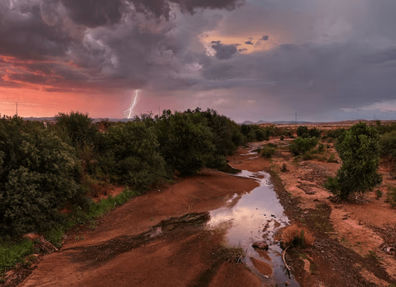

NATIONAL GEOGRAPHIC
The truth behind the turbulent love story of Napoleon and Joséphine
HISTORY & CULTURE
Revered in equal parts as hero or villain, Emperor Napoleon I led France from the rubble of the Revolution to peace and political stability. At the same time, he undertook a military expansion that at its height saw him control most of Europe between 1809 and 1811. For fourteen years, from his ascension through the army ranks, via his appointment to First Consul and finally to emperor, Joséphine was by his side. Creating a legend more than the sum of their parts, their relationship has long been held up as the epitome of romance, based in a large part on the emperor’s letters to his wife.
While some recent historians have debunked the myth of their romance, however, Ridley Scott, director of the film Napoleon calls Joséphine the emperor’s “one true love”. “[Napoleon] came out of nowhere to rule everything but all the while he was waging a romantic war with his adulterous wife Joséphine. He conquered the world to try to win her love, and when he couldn’t, he conquered it to destroy her, and destroyed himself in the process” the director tells Deadline.
How true is it that Joséphine was Napoleon’s one true love, that she alone was adulterous, or that his militaristic ambitions were driven by their relationship? The truth is as complex as the two characters involved.
From the islands to Paris
The woman who would become Joséphine Bonaparte was born Marie-Josèphe- Rose Tascher de la Pagerie in 1763. Known to her family as Rose, the future empress was from a plantation-owning family in French-controlled Martinique whose fortunes were in decline. A financially motivated marriage brought her to Paris, and after her husband abandoned her, Rose polished her provincial approach and developed the diplomatic skills for which she would later be lauded. She found her way into the high-maintenance periphery of the French court, and by the time she met Napoleon in 1795, Rose was the most expensive courtesan in France.
At 32, she was 6 years older than Napoleon, a noblewoman and widowed mother of two who was jailed during the Reign of Terror and narrowly escaped the guillotine. The future empress was set free after the Terror ended but not without consequence. Historians have written about the extreme mental anguish she suffered while imprisoned, and how it manifested in her later behavior via frivolous spending, romantic affairs, and need for security.
With a certain symmetry, Napoleon’s origins were also with a family of declining fortune, on an island under French control, albeit much closer to France than Martinique. Born into minor Corsican nobility in 1769, Napoleon was intelligent and determined to better his lot. From a young age he wrestled with innate insecurities around class, money, intelligence, and later, sex. The interplay of these, coupled with his persistent sensitivity to criticism, drove his ambitions.
His father decided on Napoleon’s military training, and he worked his way up through military school and the army. By the time he met Joséphine, he was a promising army general, although physically unattractive, still plagued with myriad inferiority complexes, and far from the emperor he would become less than ten years later.
A union of mutual needs
Napoleon met Rose at a society dinner in late 1795. To an insecure Napoleon, what Rose lacked in youth she made up for in sexual experience, social sophistication, and aristocratic ties; her praise flattered his vanity. Rose was initially uninterested in marriage, but as Napoleon’s military standing grew, her resistance thawed. To Rose, Napoleon represented financial security and stability after the horrors of her imprisonment. He modified her middle name and from then on called her Joséphine.
They married in a civil ceremony in March 1796. Two days later, Napoleon left to lead the French army into Italy the start of a decisive campaign that would reshape Europe’s political landscape, catapulting him to prominence. It was their first of many military-induced separations.
Napoleon’s ardor for Joséphine is obvious in the many letters he penned to her while away, sometimes more than once per day. His words fluctuate between longing, lust, possessiveness, insults, and accusations. Historian Adam Zamoyski describes Napoleon’s letters from Italy as expressing a “teenage frenzy” that Joséphine found “ridiculous and embarrassing.”
Comments :
- john Very good
- john Very good
Leave a Reply
Your email address will not be published. Required fields are marked*
Related posts:
-
Unlocking the secrets of the North American monsoon
Death Valley is famously the hottest and driest place in North America, recording less than two inches of rainfall a year. But earlier this month, the California desert nearly broke its single-day
View article -
 How the West’s wineries are battling ruinous wildfire smoke
How the West’s wineries are battling ruinous wildfire smokeAs dawn breaks at the Sokol Blosser Winery in Dayton, Oregon, Alex Sokol Blosser is already preparing for that day’s harvest of pinot noir wine grapes.
View article -
 Polluters are using forests as ‘carbon offsets.’ Climate change has other plans.
Polluters are using forests as ‘carbon offsets.’ Climate change has other plans.On July 6, 2021, lightning ignited a fire in the Fremont-Winema National Forest of southern Oregon, in an area packed with dead trees from a mountain pine-beetle outbreak. Fueled by drought, the Bootleg fire exploded
View article